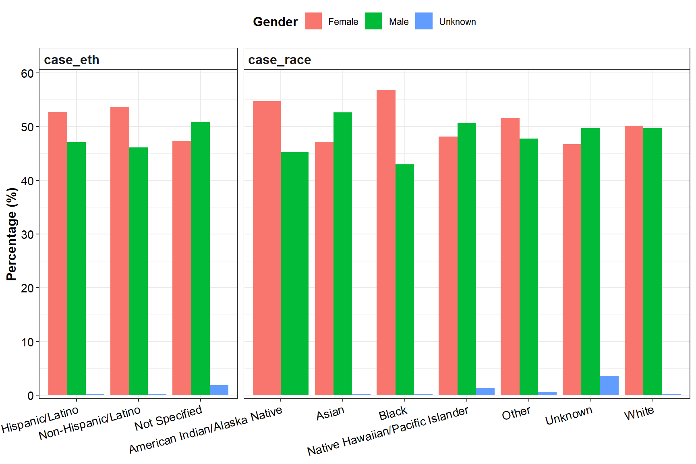
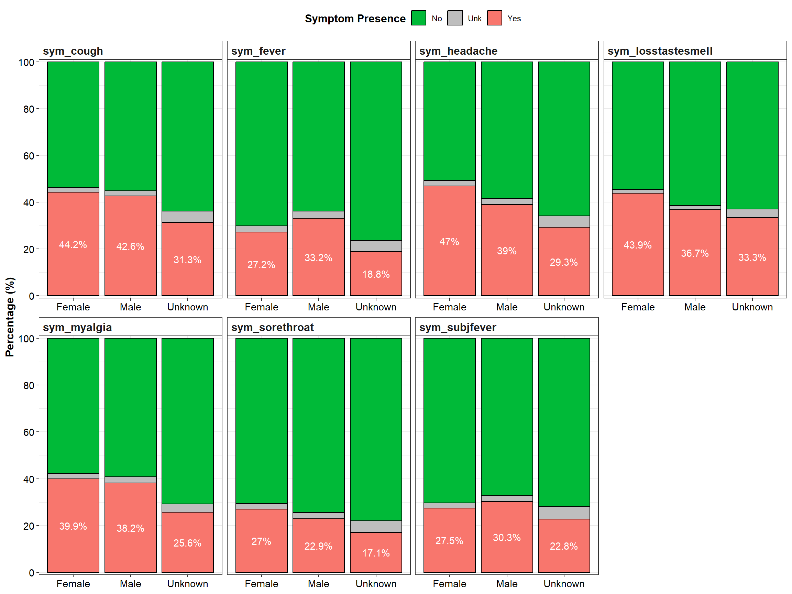

library(readxl) # To import excel datasets
library(tidyverse) # Data wrangling and Viz
library(freqtables)
library(gt)
library(patchwork)COVID-19 Example Data
The dataset
The dataset used in this project is an example Covid data of 82,101 observations and 31 variables relating to demographics, symptoms and outcomes of Covid (Hospitalization and dead). It can be downloaded at https://github.com/appliedepi/epiRhandbook_eng/tree/master/data/covid_example_data
Packages Importation
Data Importation
After importing the dataset, I use the glimpse function to have a feel about the size and the variables. R seems to have accurately captured the type of each variable.
df <- read_excel('covid_example_data.xlsx')
glimpse(df)Rows: 82,101
Columns: 31
$ PID <chr> "3a85e6992a5ac52f", "c6b5281d5fc50b96", "53495a…
$ reprt_creationdt_FALSE <dttm> 2020-03-22, 2020-02-01, 2020-02-10, 2020-03-20…
$ case_dob_FALSE <dttm> 2004-11-08, 1964-06-07, 1944-04-06, 1964-06-25…
$ case_age <dbl> 16, 57, 77, 57, 56, 65, 47, 61, 36, 42, 74, 27,…
$ case_gender <chr> "Male", "Male", "Female", "Female", "Male", "Ma…
$ case_race <chr> "WHITE", "WHITE", "BLACK", "BLACK", "WHITE", "B…
$ case_eth <chr> "NON-HISPANIC/LATINO", "NON-HISPANIC/LATINO", "…
$ case_zip <dbl> 30308, 30308, 30315, 30213, 30004, 30314, 30313…
$ Contact_id <chr> "Yes-Symptomatic", "Yes-Symptomatic", "Yes-Symp…
$ sym_startdt_FALSE <dttm> 2020-03-20, 2020-01-28, 2020-02-10, 2021-05-19…
$ sym_fever <chr> "Yes", "No", "Yes", "No", "Yes", "Yes", "No", "…
$ sym_subjfever <chr> "Yes", "No", NA, "Yes", "Yes", "Yes", "No", "Ye…
$ sym_myalgia <chr> "No", "Yes", "Yes", "Yes", "Yes", "No", "Unk", …
$ sym_losstastesmell <chr> NA, NA, NA, NA, NA, NA, NA, NA, NA, "Yes", NA, …
$ sym_sorethroat <chr> "Yes", "No", "Yes", "Yes", "No", "Unk", "Yes", …
$ sym_cough <chr> "Yes", "Yes", "Yes", "Yes", "Yes", "Yes", "Yes"…
$ sym_headache <chr> "Yes", "No", NA, "Yes", "No", "Unk", "Yes", "No…
$ sym_resolved <chr> "No, still symptomatic", "No, still symptomatic…
$ sym_resolveddt_FALSE <dttm> NA, NA, NA, NA, NA, 2020-02-21, NA, NA, NA, NA…
$ contact_household <chr> "Yes", "No", NA, "No", "No", "No", "No", "No", …
$ hospitalized <chr> "No", "No", "Yes", NA, "Yes", "Yes", "Yes", "No…
$ hosp_admidt_FALSE <dttm> NA, NA, 2020-02-08, NA, 2020-02-26, 2020-01-27…
$ hosp_dischdt_FALSE <dttm> NA, NA, NA, NA, NA, 2020-02-21, NA, NA, NA, 20…
$ died <chr> "No", "No", "No", "No", NA, "Yes", "No", NA, "N…
$ died_covid <chr> "No", "No", "No", "No", NA, "Yes", "No", NA, "N…
$ died_dt_FALSE <dttm> NA, NA, NA, NA, NA, 2020-02-21, NA, NA, NA, NA…
$ confirmed_case <chr> "Yes", "Yes", "Yes", "Yes", "Yes", "Yes", "Yes"…
$ covid_dx <chr> "Confirmed", "Confirmed", "Confirmed", "Confirm…
$ pos_sampledt_FALSE <dttm> 2020-03-22, 2020-02-01, 2020-02-10, 2021-01-17…
$ latitude_JITT <dbl> 33.776645460, 33.780510140, 33.730233310, 33.55…
$ longitude_JITT <dbl> -84.385685230, -84.389474740, -84.384251890, -8…Data Exploration
Race and Ethnicity Formating
From glimpse, I noticed that race and ethnicity are in all caps. I have a preference for cap only at the beginning of each word.
I also choose to focus on confirmed cases.
df <- df %>%
filter(confirmed_case == "Yes") %>%
mutate(
case_race = str_to_title(case_race),
case_eth = str_to_title(case_eth),
sym_myalgia = str_to_title(sym_myalgia) # The symptom analysis below revealed that the case is no consistent here.
)Missing values
Up to 7 (died_df_FALSE, hosp_dischdt_FALSE, hosp_admdt_FALSE, sym_resolveddt_FALSE, sym_losstastesmell, died_covid, sym_resolved) variables have missing values for more than 50% of observations. The good news is that some of this are not missing per se, but not applicable. For example, if a person did not died, died_df_FALSE does not apply to them.
df %>%
summarise(
across(everything(), ~sum(is.na(.)))
) %>%
gather(
Variables, n_NAs, 1:31
) %>%
arrange(-n_NAs) %>%
mutate(Perc_NAs = round((n_NAs*100)/nrow(df), 2)) %>%
gt() %>%
fmt_number(columns = n_NAs, use_seps = T, decimals = 0)| Variables | n_NAs | Perc_NAs |
|---|---|---|
| died_dt_FALSE | 80,357 | 97.92 |
| hosp_dischdt_FALSE | 78,564 | 95.74 |
| hosp_admidt_FALSE | 77,079 | 93.93 |
| sym_resolveddt_FALSE | 65,772 | 80.15 |
| sym_losstastesmell | 50,711 | 61.80 |
| died_covid | 42,285 | 51.53 |
| sym_resolved | 42,279 | 51.52 |
| sym_subjfever | 37,895 | 46.18 |
| sym_startdt_FALSE | 37,465 | 45.65 |
| died | 36,819 | 44.87 |
| contact_household | 36,725 | 44.75 |
| hospitalized | 32,473 | 39.57 |
| sym_sorethroat | 32,231 | 39.28 |
| Contact_id | 32,194 | 39.23 |
| sym_myalgia | 32,127 | 39.15 |
| sym_headache | 32,008 | 39.00 |
| sym_cough | 31,620 | 38.53 |
| sym_fever | 31,567 | 38.47 |
| case_race | 2,627 | 3.20 |
| case_eth | 2,571 | 3.13 |
| longitude_JITT | 164 | 0.20 |
| pos_sampledt_FALSE | 119 | 0.15 |
| case_gender | 60 | 0.07 |
| latitude_JITT | 58 | 0.07 |
| case_dob_FALSE | 47 | 0.06 |
| case_age | 47 | 0.06 |
| case_zip | 13 | 0.02 |
| PID | 0 | 0.00 |
| reprt_creationdt_FALSE | 0 | 0.00 |
| confirmed_case | 0 | 0.00 |
| covid_dx | 0 | 0.00 |
Demographics
This section will include age, gender, race, and ethnicity of cases, and I choose to stratify by gender.
Gender
Females are the most represented number of cases in this dataset (52.78%). A very small proportion of cases (0.42%) are of unknown gender.
df %>%
select(case_gender) %>%
na.omit() %>%
freq_table(case_gender) %>%
select(cat, n, percent) %>%
rename(Gender = cat) %>%
gt() %>%
grand_summary_rows(
columns = c(n, percent),
fns = sum ~ sum(.),
fmt = ~fmt_number(., use_seps = T, decimals = 0)
) %>%
fmt_number(columns = percent, decimals = 2) %>%
fmt_number(columns = n, use_seps = T, decimals = 0)| Gender | n | percent | |
|---|---|---|---|
| Female | 43,280 | 52.78 | |
| Male | 38,376 | 46.80 | |
| Unknown | 346 | 0.42 | |
| sum | — | 82,002 | 100 |
Race
The black race is the most represented (44.11%), followed by the white race (39.76%). Unknown races, Asians, American Indians/Alaska Natives, and Native Hawaiians/Pacific Islanders represent minorities in this dataset, with less than 5% representativity each.
df %>%
select(case_race) %>%
na.omit() %>%
freq_table(case_race) %>%
select(cat, n, percent) %>%
rename(Race = cat) %>%
arrange(-percent) %>%
gt() %>%
grand_summary_rows(
columns = c(n, percent),
fns = sum ~ sum(.),
fmt = ~fmt_number(., use_seps = T, decimals = 0)
) %>%
fmt_number(columns = percent, decimals = 2) %>%
fmt_number(columns = n, use_seps = T, decimals = 0)| Race | n | percent | |
|---|---|---|---|
| Black | 35,037 | 44.11 | |
| White | 31,584 | 39.76 | |
| Other | 5,860 | 7.38 | |
| Unknown | 3,720 | 4.68 | |
| Asian | 3,071 | 3.87 | |
| American Indian/Alaska Native | 84 | 0.11 | |
| Native Hawaiian/Pacific Islander | 79 | 0.10 | |
| sum | — | 79,435 | 100 |
Ethnicity
Non-Hispanos/Latinos largely dominate (78.81%).
df %>%
select(case_eth) %>%
na.omit() %>%
freq_table(case_eth) %>%
select(cat, n, percent) %>%
rename(Ethnicity = cat) %>%
arrange(-percent) %>%
gt() %>%
grand_summary_rows(
columns = c(n, percent),
fns = sum ~ sum(.),
fmt = ~fmt_number(., use_seps = T, decimals = 0)
) %>%
fmt_number(columns = percent, decimals = 2) %>%
fmt_number(columns = n, use_seps = T, decimals = 0)| Ethnicity | n | percent | |
|---|---|---|---|
| Non-Hispanic/Latino | 62,649 | 78.81 | |
| Hispanic/Latino | 8,621 | 10.85 | |
| Not Specified | 8,221 | 10.34 | |
| sum | — | 79,491 | 100 |
Age
Age spans from 0 to 106 years, with an average of 39.69 and a standard deviation of 19.15.
p1 <- ggplot(df %>% filter(case_age>0), aes(x = case_age, y=" "))+
geom_boxplot()+
scale_x_continuous(breaks = seq(0, 120, 20), expand = c(.01,0))+
theme_bw()+
theme(
axis.title = element_blank(),
axis.text = element_text(size = 11, colour = "black")
)
p2 <- ggplot(df %>% filter(case_age>0), aes(x = case_age))+
geom_histogram(color = "black", fill = "white")+
scale_x_continuous(breaks = seq(0, 120, 20), expand = c(.01,0))+
theme_bw()+
theme(
axis.title.y = element_blank(),
axis.title.x = element_text(size = 12, face = "bold"),
axis.text = element_text(size = 11, colour = "black")
)
p1+p2+
plot_layout(ncol = 1, heights = c(.5,1))
Demographics by gender
# Compute the frequency distribution of race and ethnicity for per gender.
race_eth_gender <- c("case_race", "case_eth") %>% # a function from purrr that works like a loop.
map(\(i){
df %>%
select(case_gender, !!rlang::sym(i)) %>%
na.omit() %>%
freq_table(!!rlang::sym(i), case_gender)
}) %>%
list_rbind()
# Format the result from above into a publication ready table.
race_eth_gender %>%
freq_format(recipe = "n (percent_row)", name = 'perc', digits = 2) %>%
select(row_var, row_cat, col_cat, perc) %>%
spread(col_cat, perc, fill = 0) %>%
left_join(
race_eth_gender %>%
group_by(row_var, row_cat) %>%
summarise(Total = paste0(sum(n), " (100)"), .groups = "drop"),
by = join_by(row_var, row_cat)
) %>%
gt(
groupname_col = "row_var",
row_group_as_column = T,
rowname_col = "row_cat"
) %>%
tab_spanner(
label = "Case Gender",
columns = Female:Unknown
)
Case Gender
|
Total | ||||
|---|---|---|---|---|---|
| Female | Male | Unknown | |||
| case_eth | Hispanic/Latino | 4547 (52.74) | 4060 (47.09) | 14 (0.16) | 8621 (100) |
| Non-Hispanic/Latino | 33627 (53.68) | 28894 (46.13) | 117 (0.19) | 62638 (100) | |
| Not Specified | 3879 (47.28) | 4171 (50.83) | 155 (1.89) | 8205 (100) | |
| case_race | American Indian/Alaska Native | 46 (54.76) | 38 (45.24) | 0 | 84 (100) |
| Asian | 1449 (47.18) | 1617 (52.65) | 5 (0.16) | 3071 (100) | |
| Black | 19916 (56.86) | 15046 (42.96) | 65 (0.19) | 35027 (100) | |
| Native Hawaiian/Pacific Islander | 38 (48.10) | 40 (50.63) | 1 (1.27) | 79 (100) | |
| Other | 3024 (51.61) | 2797 (47.74) | 38 (0.65) | 5859 (100) | |
| Unknown | 1733 (46.74) | 1842 (49.68) | 133 (3.59) | 3708 (100) | |
| White | 15830 (50.13) | 15691 (49.69) | 55 (0.17) | 31576 (100) | |
# Viz
ggplot(data = race_eth_gender, aes(x = row_cat, y = percent_row, fill = col_cat))+
geom_col(position = "dodge")+
facet_wrap(~row_var, scales = "free_x", space = "free_x")+
scale_y_continuous(breaks = seq(0, 60, 10), limits = c(0,60), expand = c(.01,0))+
labs(y = "Percentage (%)", fill = "Gender")+
theme_bw()+
theme(
legend.position = "top",
axis.text.x = element_text(angle = 15, hjust = 1),
axis.title.x = element_blank(),
strip.background = element_rect(fill = "white"),
strip.text = element_text(size = 12, face = "bold", hjust = 0),
axis.title.y = element_text(size = 12, face = "bold"),
legend.title = element_text(size = 12, face = "bold"),
axis.text = element_text(size = 11, colour = "black")
)
p1 <- ggplot(df %>% filter(case_age>0 & !is.na(case_gender)), aes(x = case_age, y=" ", fill = case_gender))+
geom_boxplot()+
scale_x_continuous(breaks = seq(0, 120, 20), expand = c(.01,0))+
theme_bw()+
theme(
axis.title = element_blank(),
axis.text = element_text(size = 11, colour = "black")
)
p2 <- ggplot(df %>% filter(case_age>0 & !is.na(case_gender)),
aes(x = case_age, fill = case_gender, fill = case_gender))+
geom_histogram(color = "black")+
scale_x_continuous(breaks = seq(0, 120, 20), expand = c(.01,0))+
theme_bw()+
theme(
# axis.title.y = element_blank(),
axis.title.x = element_text(size = 12, face = "bold"),
axis.text = element_text(size = 11, colour = "black")
)
p1+p2+
plot_layout(ncol = 1, heights = c(.5,1), guides = "collect")&
theme(legend.position = "top")
Symptoms
Overall
This analysis reveals that top 3 Covid symptoms include cough (prevalence = 43.49%), headache (43.29%) and loss of taste-smell (40.59%). The least prevalent symptom is sore throat (25.10%).
names(df %>%
select(
starts_with("sym_"),
-c(sym_startdt_FALSE, sym_resolved, sym_resolveddt_FALSE)
)) %>%
map(\(i){
df %>%
select(!!rlang::sym(i)) %>%
na.omit() %>%
freq_table(!!rlang::sym(i))
}) %>%
list_rbind() %>%
freq_format(recipe = "n (percent)", name = 'perc', digits = 2) %>%
select(var, cat, perc) %>%
spread(cat, perc) %>%
gt %>%
tab_spanner(
label = "Symptom Occurrence",
columns = No:Yes
)| var |
Symptom Occurrence
|
||
|---|---|---|---|
| No | Unk | Yes | |
| sym_cough | 27452 (54.42) | 1054 (2.09) | 21936 (43.49) |
| sym_fever | 33936 (67.21) | 1446 (2.86) | 15113 (29.93) |
| sym_headache | 27175 (54.29) | 1211 (2.42) | 21668 (43.29) |
| sym_losstastesmell | 18092 (57.71) | 534 (1.70) | 12725 (40.59) |
| sym_myalgia | 29197 (58.47) | 1219 (2.44) | 19519 (39.09) |
| sym_sorethroat | 36085 (72.41) | 1237 (2.48) | 12509 (25.10) |
| sym_subjfever | 30446 (68.93) | 1023 (2.32) | 12698 (28.75) |
By Gender
symp_by_gender <- names(df %>%
select(
starts_with("sym_"),
-c(sym_startdt_FALSE, sym_resolved, sym_resolveddt_FALSE)
)) %>%
map(\(i){
df %>%
select(case_gender, !!rlang::sym(i)) %>%
na.omit() %>%
freq_table(case_gender, !!rlang::sym(i))
}) %>%
list_rbind()
# Format the result from above into a publication ready table.
symp_by_gender %>%
freq_format(recipe = "n (percent_row)", name = 'perc', digits = 2) %>%
select(col_var, row_cat, col_cat, perc) %>%
spread(col_cat, perc, fill = 0) %>%
left_join(
symp_by_gender %>%
group_by(col_var, row_cat) %>%
summarise(Total = paste0(sum(n), " (100)"), .groups = "drop"),
by = join_by(col_var, row_cat)
) %>%
rename("Case Gender" = row_cat) %>%
gt(
groupname_col = "col_var",
row_group_as_column = T
) %>%
tab_spanner(
label = "Symptom Occurrence",
columns = No:Yes
)| Case Gender |
Symptom Occurrence
|
Total | |||
|---|---|---|---|---|---|
| No | Unk | Yes | |||
| sym_cough | Female | 14563 (53.76) | 542 (2.00) | 11984 (44.24) | 27089 (100) |
| Male | 12833 (55.17) | 508 (2.18) | 9921 (42.65) | 23262 (100) | |
| Unknown | 53 (63.86) | 4 (4.82) | 26 (31.33) | 83 (100) | |
| sym_fever | Female | 18990 (70.11) | 734 (2.71) | 7361 (27.18) | 27085 (100) |
| Male | 14877 (63.80) | 708 (3.04) | 7732 (33.16) | 23317 (100) | |
| Unknown | 65 (76.47) | 4 (4.71) | 16 (18.82) | 85 (100) | |
| sym_headache | Female | 13649 (50.76) | 610 (2.27) | 12631 (46.97) | 26890 (100) |
| Male | 13469 (58.37) | 597 (2.59) | 9008 (39.04) | 23074 (100) | |
| Unknown | 54 (65.85) | 4 (4.88) | 24 (29.27) | 82 (100) | |
| sym_losstastesmell | Female | 9307 (54.59) | 266 (1.56) | 7476 (43.85) | 17049 (100) |
| Male | 8750 (61.43) | 266 (1.87) | 5229 (36.71) | 14245 (100) | |
| Unknown | 34 (62.96) | 2 (3.70) | 18 (33.33) | 54 (100) | |
| sym_myalgia | Female | 15488 (57.79) | 613 (2.29) | 10698 (39.92) | 26799 (100) |
| Male | 13647 (59.22) | 603 (2.62) | 8796 (38.17) | 23046 (100) | |
| Unknown | 58 (70.73) | 3 (3.66) | 21 (25.61) | 82 (100) | |
| sym_sorethroat | Female | 18913 (70.65) | 626 (2.34) | 7232 (27.01) | 26771 (100) |
| Male | 17103 (74.46) | 607 (2.64) | 5260 (22.90) | 22970 (100) | |
| Unknown | 64 (78.05) | 4 (4.88) | 14 (17.07) | 82 (100) | |
| sym_subjfever | Female | 16679 (70.38) | 510 (2.15) | 6511 (27.47) | 23700 (100) |
| Male | 13721 (67.25) | 510 (2.50) | 6172 (30.25) | 20403 (100) | |
| Unknown | 41 (71.93) | 3 (5.26) | 13 (22.81) | 57 (100) | |
From the table above and the graph below, the prevalence of headache, loss of taste/smell and sore throat seems higher in females, while fever seems more prevalent in males. The prevalences of cough and myalgia differ by less than 1% between both genders. These results need to be perceived carefully, since about 1-3% of cases have unknown symptom status, talkless of about 39-62% of participants having missing values for symptom status.
# Viz
ggplot(symp_by_gender, aes(x = row_cat, y = percent_row, fill = col_cat))+
geom_col(color = "black")+
geom_text(data = symp_by_gender %>% filter(col_cat == "Yes"),
aes(label = paste0(round(percent_row,1),"%")),
position = position_stack(vjust = .5), color = "white")+
facet_wrap(~col_var, scales = "free_x", nrow = 2)+
scale_y_continuous(breaks = seq(0, 100, 20), expand = c(.01,0))+
scale_fill_manual(values = c("#00BA38", "grey", "#F8766D"))+
labs(y = "Percentage (%)", fill = "Symptom Presence")+
theme_bw()+
theme(
legend.position = "top",
axis.title.x = element_blank(),
strip.background = element_rect(fill = "white"),
strip.text = element_text(size = 12, face = "bold", hjust = 0),
axis.title.y = element_text(size = 12, face = "bold"),
legend.title = element_text(size = 12, face = "bold"),
axis.text = element_text(size = 11, colour = "black")
)
Covid Outcome
Overall, 10.68% of cases were hospitalized, 3.76% died, and 3.36% died from covid.
c("hospitalized", "died", "died_covid") %>%
map(\(i){
df %>%
select(!!rlang::sym(i)) %>%
na.omit() %>%
freq_table(!!rlang::sym(i))
}) %>%
list_rbind() %>%
freq_format(recipe = "n (percent)", name = 'perc', digits = 2) %>%
select(var, cat, perc) %>%
spread(cat, perc, fill = 0) %>%
gt() %>%
tab_spanner(
label = "Outcome Occurrence",
columns = No:Yes
)| var |
Outcome Occurrence
|
|||
|---|---|---|---|---|
| No | Under Review | Unknown | Yes | |
| died | 43383 (95.89) | 0 | 158 (0.35) | 1702 (3.76) |
| died_covid | 38318 (96.33) | 123 (0.31) | 0 | 1336 (3.36) |
| hospitalized | 44295 (89.32) | 0 | 0 | 5294 (10.68) |
By Gender
out_by_gender <- c("hospitalized", "died", "died_covid") %>%
map(\(i){
df %>%
select(case_gender, !!rlang::sym(i)) %>%
na.omit() %>%
freq_table(case_gender, !!rlang::sym(i))
}) %>%
list_rbind()
# Format the result from above into a publication ready table.
out_by_gender %>%
freq_format(recipe = "n (percent_row)", name = 'perc', digits = 2) %>%
select(col_var, row_cat, col_cat, perc) %>%
spread(col_cat, perc, fill = 0) %>%
left_join(
out_by_gender %>%
group_by(col_var, row_cat) %>%
summarise(Total = paste0(sum(n), " (100)"), .groups = "drop"),
by = join_by(col_var, row_cat)
) %>%
rename("Case Gender" = row_cat) %>%
gt(
groupname_col = "col_var",
row_group_as_column = T
) %>%
tab_spanner(
label = "Outcome Occurrence",
columns = No:Yes
)| Case Gender |
Outcome Occurrence
|
Total | ||||
|---|---|---|---|---|---|---|
| No | Under Review | Unknown | Yes | |||
| died | Female | 23263 (96.23) | 0 | 74 (0.31) | 837 (3.46) | 24174 (100) |
| Male | 20062 (95.49) | 0 | 83 (0.40) | 865 (4.12) | 21010 (100) | |
| Unknown | 54 (98.18) | 0 | 1 (1.82) | 0 | 55 (100) | |
| died_covid | Female | 20539 (96.69) | 71 (0.33) | 0 | 633 (2.98) | 21243 (100) |
| Male | 17728 (95.92) | 52 (0.28) | 0 | 703 (3.80) | 18483 (100) | |
| Unknown | 47 (100.00) | 0 | 0 | 0 | 47 (100) | |
| hospitalized | Female | 23800 (89.78) | 0 | 0 | 2709 (10.22) | 26509 (100) |
| Male | 20411 (88.78) | 0 | 0 | 2580 (11.22) | 22991 (100) | |
| Unknown | 76 (93.83) | 0 | 0 | 5 (6.17) | 81 (100) | |
From the table and the graph, a greater proportion of male cases died from covid or another cause. A greater proportion of males got hospitalized too.
# Viz
ggplot(out_by_gender, aes(x = row_cat, y = percent_row, fill = col_cat))+
geom_col(color = "black")+
geom_text(data = out_by_gender %>% filter(col_cat == "Yes"),
aes(label = paste0(round(percent_row,1),"%")),
position = position_stack(vjust = .5), color = "white")+
facet_wrap(~col_var, scales = "free_x", nrow = 1)+
scale_y_continuous(breaks = seq(0, 100, 20), expand = c(.01,0))+
scale_fill_manual(values = c("#00BA38", "grey", "grey", "#F8766D"))+
labs(y = "Percentage (%)", fill = "Outcome Occured")+
theme_bw()+
theme(
legend.position = "top",
axis.title.x = element_blank(),
strip.background = element_rect(fill = "white"),
strip.text = element_text(size = 12, face = "bold", hjust = 0),
axis.title.y = element_text(size = 12, face = "bold"),
legend.title = element_text(size = 12, face = "bold"),
axis.text = element_text(size = 11, colour = "black")
)
Weekly trend of Outcomes
Given the number of NAs for hospitalization date and the dead date, I used the report creation date to study weekly trends of cases, hospitalization and dead.
To capture the weekly trend, instead of using week (1-53), ISO week or epidemiological week, I decided to floor report creation date to the nearest week. The resulting date version, does not make a lot of sense by its own, but it is very convenient for visualization. Below is a table illustrating the date flooring.
tibble(
Original_Date = seq(dmy("08032026"), dmy("17032026"), "1 day")
) %>%
mutate(
Floored_Date = floor_date(Original_Date, unit = "week")
) %>%
gt() %>%
fmt_date(date_style = "wday_day_month_year")| Original_Date | Floored_Date |
|---|---|
| Sunday 8 March 2026 | Sunday 8 March 2026 |
| Monday 9 March 2026 | Sunday 8 March 2026 |
| Tuesday 10 March 2026 | Sunday 8 March 2026 |
| Wednesday 11 March 2026 | Sunday 8 March 2026 |
| Thursday 12 March 2026 | Sunday 8 March 2026 |
| Friday 13 March 2026 | Sunday 8 March 2026 |
| Saturday 14 March 2026 | Sunday 8 March 2026 |
| Sunday 15 March 2026 | Sunday 15 March 2026 |
| Monday 16 March 2026 | Sunday 15 March 2026 |
| Tuesday 17 March 2026 | Sunday 15 March 2026 |
Hospitalization
n Cases
…
p1 <- df %>%
mutate(
hosp_week = floor_date(reprt_creationdt_FALSE, unit = "week")
) %>%
select(hosp_week, case_gender) %>%
na.omit() %>%
group_by(hosp_week, case_gender) %>%
count() %>%
ggplot(aes(x = hosp_week, y = n, fill = case_gender))+
geom_col(color = "grey")+
scale_y_continuous(breaks = seq(0, 3500, 500), expand = c(.01,0))+
scale_x_date(date_breaks = "2 months", date_labels = "%b\n%Y",
limits = c(ymd("2019-12-01"), ymd("2021-08-27")))+
scale_fill_manual(values = c("#F8766D", "#00BA38", "#619CFF"))+
labs(y = "n Cases", x = "Report Creation Date")+
theme_bw()+
theme(
legend.position = "top",
axis.title = element_text(size = 12, face = "bold"),
legend.title = element_text(size = 12, face = "bold"),
axis.text = element_text(size = 11, colour = "black")
)% of Hospitalization from n Cases
…
hospi_week <- df %>%
mutate(
hosp_week = floor_date(reprt_creationdt_FALSE, unit = "week")
) %>%
group_by(hosp_week) %>%
mutate(n = n()) %>%
group_by(hosp_week, n) %>%
summarise(n_hospi = sum(hospitalized == "Yes", na.rm = T), .groups = "drop") %>%
mutate(perc_hospi = (n_hospi*100)/n)
hospi_week_gender <- df %>%
mutate(
hosp_week = floor_date(reprt_creationdt_FALSE, unit = "week")
) %>%
group_by(hosp_week, case_gender) %>%
mutate(n = n()) %>%
group_by(hosp_week, case_gender, n) %>%
summarise(n_hospi = sum(hospitalized == "Yes", na.rm = T), .groups = "drop") %>%
mutate(perc_hospi = (n_hospi*100)/n) %>%
ungroup() %>% na.omit()
p2 <- ggplot(hospi_week, aes(x = hosp_week, y = perc_hospi))+
geom_line(aes(color = "_Global"))+
geom_point(aes(color = "_Global"))+
geom_line(data = hospi_week_gender,
aes(x = hosp_week, y = perc_hospi, colour = case_gender))+
geom_point(data = hospi_week_gender,
aes(x = hosp_week, y = perc_hospi, colour = case_gender))+
scale_y_continuous(breaks = seq(0, 100, 20), expand = c(.01,0))+
scale_x_date(date_breaks = "2 months", date_labels = "%b\n%Y",
limits = c(ymd("2019-12-01"), ymd("2021-08-27")))+
scale_color_manual(values = c("black", "#F8766D", "#00BA38", "#619CFF"))+
labs(y = "% Hospitalized from n Cases", x = "Report Creation Date")+
theme_bw()+
theme(
legend.position = "top",
axis.title = element_text(size = 12, face = "bold"),
legend.title = element_text(size = 12, face = "bold"),
axis.text = element_text(size = 11, colour = "black")
)n Deads
…
p3 <- df %>%
mutate(
hosp_week = floor_date(reprt_creationdt_FALSE, unit = "week")
) %>%
select(hosp_week, case_gender, died) %>%
na.omit() %>%
group_by(hosp_week, case_gender, died) %>%
count() %>%
filter(died == "Yes") %>%
ggplot(aes(x = hosp_week, y = n, fill = case_gender))+
geom_col(color = "grey")+
scale_y_continuous(breaks = seq(0, 70, 10), expand = c(.01,0))+
scale_x_date(date_breaks = "2 months", date_labels = "%b\n%Y",
limits = c(ymd("2019-12-01"), ymd("2021-08-27")))+
scale_fill_manual(values = c("#F8766D", "#00BA38"))+
labs(y = "n Deaths", x = "Report Creation Date")+
theme_bw()+
theme(
legend.position = "top",
axis.title = element_text(size = 12, face = "bold"),
legend.title = element_text(size = 12, face = "bold"),
axis.text = element_text(size = 11, colour = "black")
)n Deads from Covid
p4 <- df %>%
mutate(
hosp_week = floor_date(reprt_creationdt_FALSE, unit = "week")
) %>%
select(hosp_week, case_gender, died_covid) %>%
na.omit() %>%
group_by(hosp_week, case_gender, died_covid) %>%
count() %>%
filter(died_covid == "Yes") %>%
ggplot(aes(x = hosp_week, y = n, fill = case_gender))+
geom_col(color = "grey")+
scale_y_continuous(breaks = seq(0, 70, 10), expand = c(.01,0))+
scale_x_date(date_breaks = "2 months", date_labels = "%b\n%Y",
limits = c(ymd("2019-12-01"), ymd("2021-08-27")))+
scale_fill_manual(values = c("#F8766D", "#00BA38"))+
labs(y = "n Deaths from Covid", x = "Report Creation Date")+
theme_bw()+
theme(
legend.position = "top",
axis.title = element_text(size = 12, face = "bold"),
legend.title = element_text(size = 12, face = "bold"),
axis.text = element_text(size = 11, colour = "black")
)Bamm!!
p1+p2+p3+p4+
plot_layout(ncol = 1)